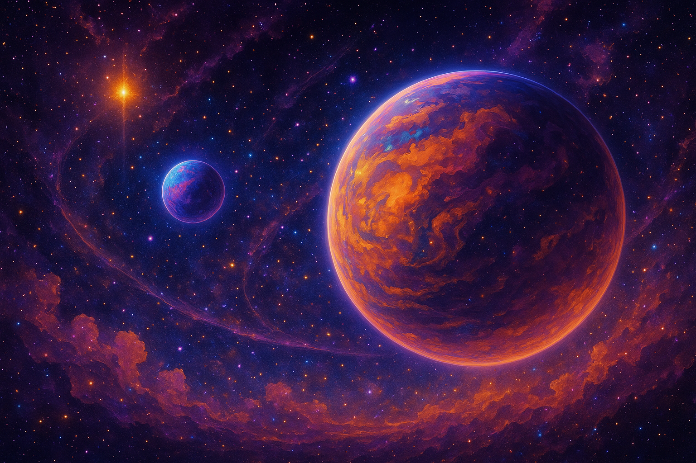
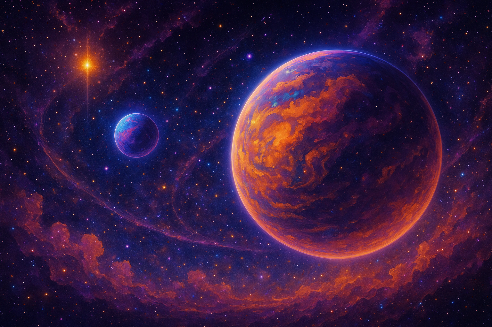

Curated Art
This gallery celebrates Matthew LaBarre’s visual explorations. His cosmic works appear across Tumblr, Facebook, Instagram, YouTube and Medium, where he shares visionary art alongside his musical offerings. The pieces often feature swirling galaxies, planetary tones and sacred geometry—a direct translation of the vibroacoustic frequencies found in his Planetary Tones compositions. While we cannot embed social‑media posts directly, the images below provide a glimpse into this universe. For a deeper dive, visit his Instagram, YouTube, and Tumblr profiles. These external pages host numerous paintings, animated meditations and photo essays.
 

Matthew’s art is informed by his experimental frameworks such as the CBARL CSP protocol and ULS observational methodology, which emphasise coherence between sound, colour and consciousness. Together with his Planetary Tones discs, these paintings offer a multi‑sensory gateway into meditation and self‑healing.